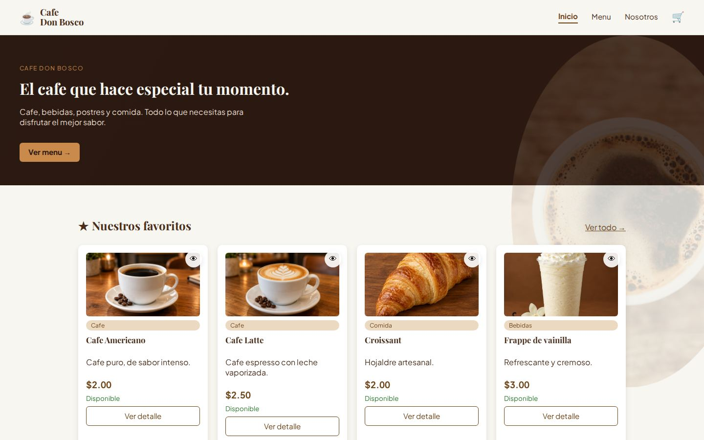
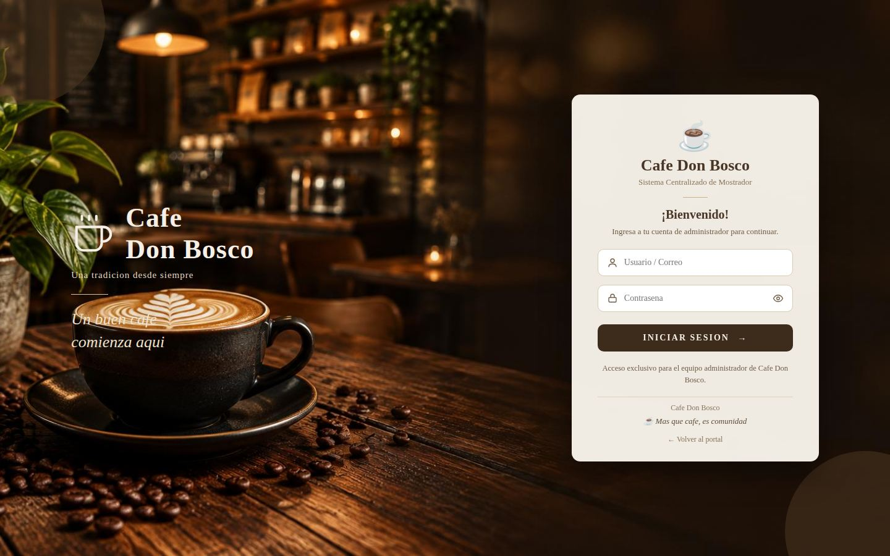
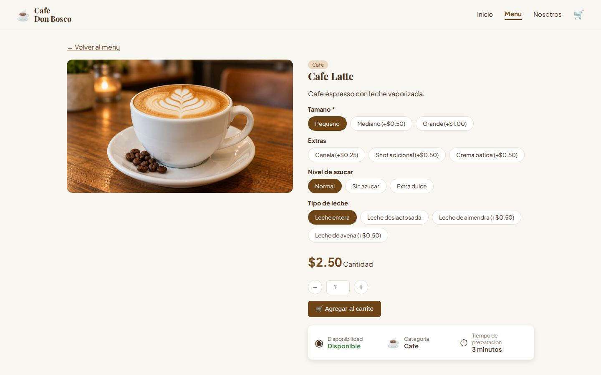
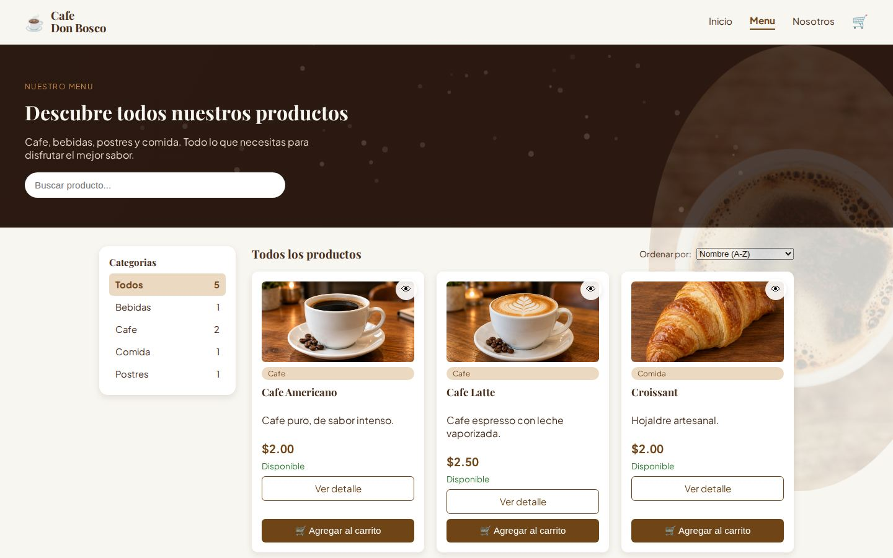
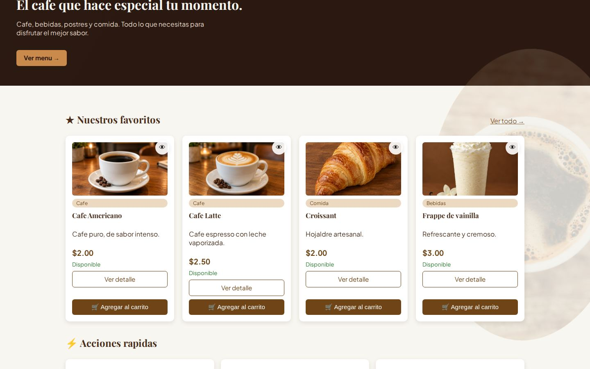
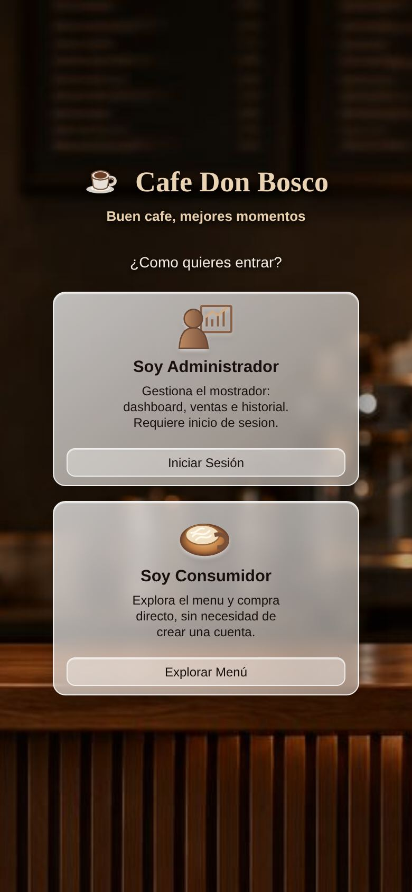

Café Don Bosco
Sistema web completo para una cafetería: una tienda en línea donde el cliente personaliza su pedido y paga sin crear cuenta, y un panel de administración con punto de venta, inventario e historial. Todo comparte la misma base de datos.

★ Objetivo
El reto
Una cafetería vende en el mostrador y en línea, y las dos cosas tienen que cuadrar: el mismo inventario, los mismos precios y un solo historial de ventas, sin que nadie pueda manipular un precio desde el navegador.
★ Proceso
Cómo lo resolví
Construí el sistema en Java con Servlets, JSP y JDBC, sin frameworks, para dominar el patrón MVC por dentro. La tienda y el panel usan una sola tabla de ventas con el mismo ciclo de estados (recibido, en preparación, listo y entregado), así el stock siempre cuadra. El servidor vuelve a calcular precios y stock en cada paso, y el proyecto tiene 83 pruebas unitarias con JUnit 5 y Mockito.
★ Features
Lo que hace el sitio
Tienda sin registro
El cliente ve el menú, busca, filtra por categoría y compra como invitado.
Pedidos personalizados
Tamaño, tipo de leche, nivel de azúcar y extras, con el precio recalculado al instante.
Carrito sin recargar
Los productos se agregan con fetch y el contador del carrito se actualiza en el momento.
Ticket de compra
Se imprime, se descarga en PDF, llega por correo o se comparte por WhatsApp.
Panel de administración
Resumen del día, productos con poco stock, punto de venta del mostrador e historial de ventas.
API REST
Rutas públicas y de administrador, todas con el mismo formato de respuesta en JSON.
Seguridad
Contraseñas con BCrypt, bloqueo tras 5 intentos fallidos, precios validados en el servidor y tickets con código aleatorio.
83 pruebas unitarias
Validaciones, carrito, inicio de sesión, estados de venta y horario de atención probados con JUnit 5 y Mockito.
★ Versiones
Todos los links del proyecto

Tienda
Donde el cliente ve el menú, personaliza su pedido y paga sin crear cuenta.
Abrir en vivo ↗Portal de entrada
El cliente entra a comprar y el administrador al panel.
Abrir en vivo ↗
Panel de administración
Acceso privado para manejar ventas, inventario e historial.
Abrir en vivo ↗★ Galería
Capturas del sitio en vivo



